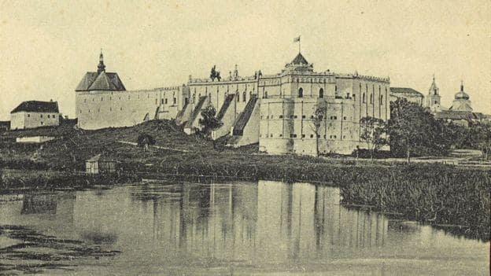
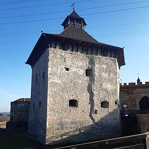
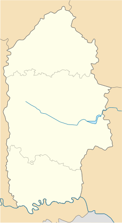

Меджибізька фортеця — одна з найстаріших фортець в Україні, побудована в XIV столітті на місці злиття річок Південний Буг і Бужок. Вона відігравала важливу роль в обороні регіону від монголо-татарських нападів та пізніше стала осередком культурного і політичного життя. Завдяки своїм потужним укріпленням і стратегічному розташуванню, фортеця пережила численні війни і досі зберігає свій величний вигляд.
Ласкаво просимо до Меджибізької фортеці
Історія фортеці
Найцінніша оборонна споруда України, руїни костелу у пізньоготичному стилі, меморіальні колони, фортифікована каплиця-ротонда XVII ст. , могила Баал-Шем Това, який заснував хасидизм — все це Меджибізький замок.
Місто Меджибіж вперше з’явилося в документах 12 століття, а саме у літописі 1146–1148 років. Тоді князь Ізяслав Мстиславич передав у власність Святославу Всеволодовичу п’ять міст, одним з яких було і Межибоже. У 13 столітті місто входило до складу Болохівського князівства, а під час боротьби князя Данила Галицького з татарською навалою фортецю зруйнували і майже 100 років ця земля страждала від іго. У 1362 році Ольгерд прогнав татар і Межибоже перейшло до складу Луцької землі, а далі було передане племінникам князя, братам Коріатовичам. Вони відбудували та розширили фортецю, доповнили її житловими та господарчими будівлями. Замок став детинцем, поруч з яким у 14 столітті звели церкву за мотивами романських храмів Європи.

У XVIІ столітті замок зазнавав постійних випробувань з боку різних військ. Його постійно на короткий період займали козаки, османи і зрештою повертали поляки. Зокрема, під час Хмельниччини гетьман Богдан Хмельницький двічі займав Меджибізький замок
Архітектура
Меджибізька фортеця вражає своєю масивністю та величчю. Її архітектура поєднує оборонні функції з елементами ренесансного стилю, що робить її не тільки надійним укріпленням, але й справжньою архітектурною перлиною. Основою фортеці є масивні кам'яні стіни завтовшки до 6 метрів, побудовані у формі трикутника. Фортеця має кілька веж, з яких найвідоміша — Лицарська, яка збереглася до нашого часу. Вежі служили для оборони та спостереження за околицями, забезпечуючи максимальний огляд на кілька кілометрів. Головний вхід до фортеці прикрашений міцними дерев'яними воротами та мостом через глибокий рів, що оточував укріплення. Згодом архітектурний стиль фортеці змінився, коли до її конструкції були додані палацові споруди в стилі ренесансу. Внутрішні приміщення палацу, зокрема зали, були оздоблені декоративними елементами, характерними для тогочасної архітектури. Фортеця також має підземні ходи, які використовувалися для оборони та зберігання провіанту, а також таємного пересування гарнізону під час облоги. Оборонні стіни, бастіони та вежі роблять її однією з найвражаючих і найкраще збережених фортець України.


Екскурсії та відвідування
Меджибізька фортеця відкрита для відвідувачів щодня. Ось розклад екскурсій.